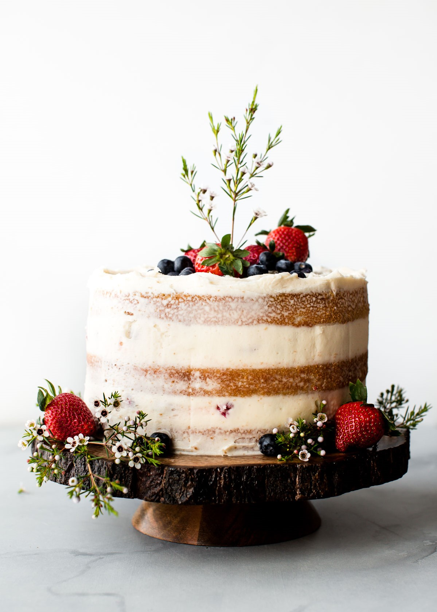

Instructions

Heat oven to 350 degrees. Butter and line three 6-inch cake pans with parchment paper.
In a large jug combine and whisk together the egg whites, whole egg, milk, and the vanilla extract. Set aside.
In the bowl of an electric mixer fitted with the paddle attachment, combine the dry ingredients together on low speed for 1 minute. (You can also do it by hand)
Add the cold butter and continue to mix on low until the mixture is a fine crumbly texture.
Add the liquid mixture into your dry ingredients in 2 separate batches making sure to scrape the sides and bottom before and after each batch, mixing until light, fluffy, homogenous and well incorporated. Fold once or twice to ensure the batter at bottom of bowl is incorporated.
Time Schedule
| Monday |
Tuesday |
Wednesday |
| 10AM-6PM |
10AM-6PM |
10AM-6PM |
| Thursday |
Friday |
Saturday |
| 10AM-6PM |
10AM-6PM |
10AM-10PM |
OTTAWA CAKE
Whether it’s working with fondant or buttercream, we’re here to set the record straight on professional cake decorating. We’re here to make sure you nail it! We offer courses to help you gain a solid baseline knowledge in professional cake decorating with so many opportunities to advance! Currently we are revising our classes and updating our curriculum to reflect today’s trends. We’re so excited to offer you this! Keep checking in to stay updated or follow us on Facebook and Instagram.